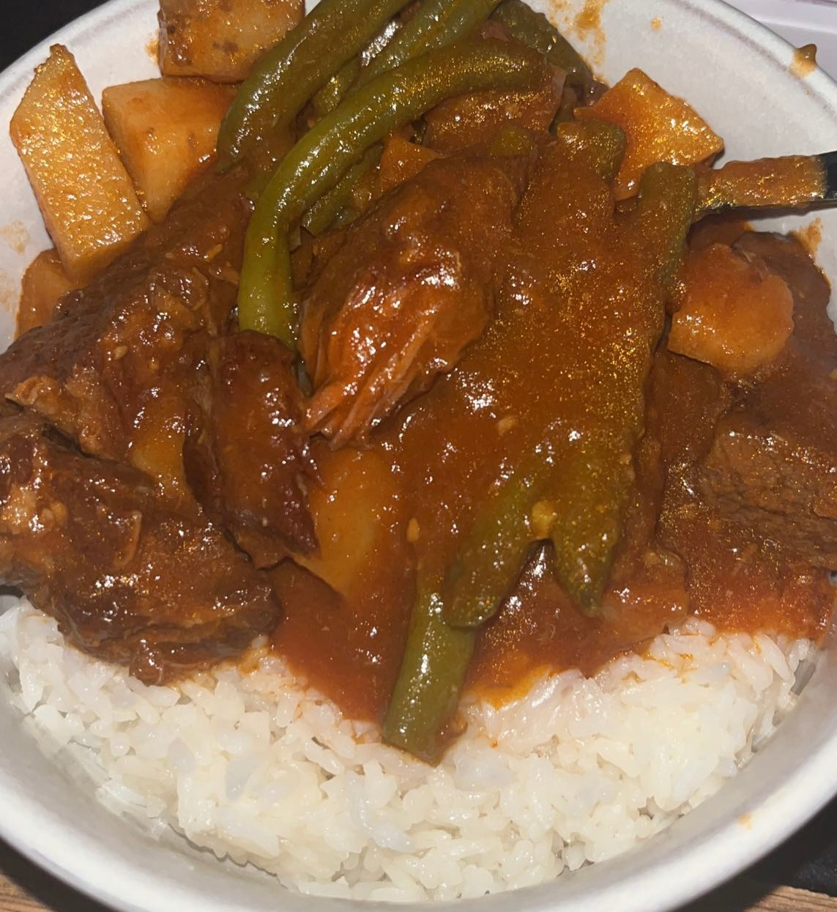

recipes

scallop fra diavolo
This dish is the recipe I make for someone when they ask me to cook a "fancy" dinner. Although the plate looks like it came from a restaurant, this pasta is quite easy to prepare.
read recipe
mango cake
I used to sell this mango cake for parties and events, but now that my baking business has been put on hold, I am more inclined to share this recipe. I developed this mango cake because I was wholly unsatisfied with other mango cakes on the market. Where my mango cake recipe differs is the depth of flavor found throughout all the cake layers. I make a mango simple syrup to soak into the fluffy sponge cake, a mango puree for the center of the cake, using the fruit scraps from the mango syrup, and finally add fresh mango slices to the top of the cake for taste and presentation.
read recipe

mechado
Mechado is a Filipino beef stew that my mom used to make me when I was younger. It is a hearty dish, served over rice. The beef gets simmered in a tomato and soy sauce based broth. Typically, the dish is made with potatoes and carrots. However, I do not like carrots so I replace them with green beans when I make it myself. My mom still insists on carrots whenever she makes it though. A squeeze of calamansi or lime juice cuts through the thickness of the broth, making for a delicious stew all year round.
read recipe
ratatouille
Watching Ratatouille as a kid, I was always so amazed with the titular dish. Served in front of food critic Ego, the saucy vegetables were so simple, yet looked extrememly delicious.
The movie presentation features thinly-sliced vegetables, arranged in a repeating pattern. While the work to make this dish can be tedious, the end product is so worth it, in my opinion. Plus, if you own a mandoline to slice the veggies for you, the only real work comes in when arranging them.
read recipe